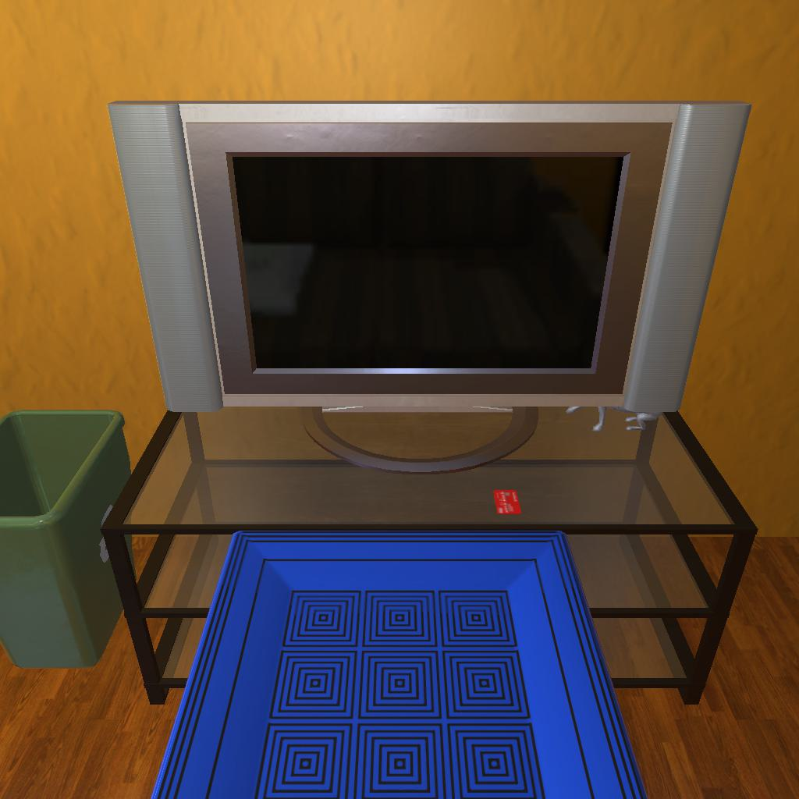

---------------------------------------------------------task: 3---------------------------------------------------------
--------------------------------------------------------------------------------------------------------------------------------------------------------------------
--------------------------------------------------------------------------------------------------------------------------------------------------------------------
Step:--------------------------------------------------------------------------6-------------------------------------------------------------------------------
----------------------------------------
VLM Prompt:
Image1:
Image2:
**Instruction**
1. Analyze the provided images to identify all visible household objects and compare the difference between images (e.h. whether the object is opened or not and taken on hand or not), focusing on those relevant to the task description "examine the plate with the floorlamp."
2. Use the analysis of images and the task hint "The agent must find an object of the desired type, locate and turn on a light source with the desired object in-hand." to answer the question: what is the most reasonable action in the choices for the task description "examine the plate with the floorlamp"?
3. Decide and write the answer using the template: The answer is: (i): , where i is the real number. If there is no desired object in images, search every place based on **Initial Observation** to find the object. And if no one is exactly correct, choose a similar answer.
**Initial Observation**
You are in the middle of a room. Looking quickly around you, you can see armchair (1), garbagecan (1), tvstand (1), shelf (1-5), sofa (1), coffeetable (1), sidetable (1-2), drawer (1)
**Answer Choices**
(1): go to armchair 1
(2): go to garbagecan 1
(3): go to tvstand 1
(4): go to shelf 2
(5): go to sofa 1
(6): go to coffeetable 1
(7): go to sidetable 1
(8): go to sidetable 2
(9): go to drawer 1
(10): go to shelf 3
(11): go to shelf 4
(12): go to shelf 5
(13): put plate 2 in/on shelf 1
(14): examine plate 2
(15): examine shelf 1
**Answer**
Let's think step by step by following the instructions.
----------------------------------------
----------------------------------------
Original Response:
First, we need to identify all visible household objects and compare the difference between images. In both images, we can see a plate with a blue pattern on the coffee table, a floor lamp next to the armchair, a sofa, a shelf with objects, a garbage can, and a TV stand. There do not appear to be any significant differences between the two images in terms of the objects being opened or held.
Next, we need to use the analysis of images and the task hint to answer the question. Since the task description is to "examine the plate with the floorlamp," we need to find the plate and then locate and turn on a light source with the plate in-hand. The plate can be seen on the coffee table, and the floor lamp is next to the armchair.
Based on the initial observation, we have not been instructed to search every place, as we can already see the plate in the images.
Considering the answer choices, the most reasonable action would be to first go to the coffee table to obtain the plate, then go to the light source, which is the floor lamp near the armchair, to examine the plate under the light. Since there is no direct action to pick up the plate and then go to the lamp, we must choose the action to go to the coffee table first.
The answer is: (6): go to coffeetable 1.
----------------------------------------
----------------------------------------
>>> Refine Original VLM Response and Get Pure Action: go to coffeetable 1
----------------------------------------
-----------------------------------------------------------------
Running time: 15.53841233253479 seconds
Total Money: 0.8102500000000001
-----------------------------------------------------------------
-----------------------------------------------------------------
Text Observation:You arrive at loc 6. On the coffeetable 1, you see a floorlamp 1, a vase 1, a pillow 1, a statue 1, a laptop 1, a remotecontrol 1, a cellphone 1, a plate 1, and a keychain 1.
-----------------------------------------------------------------
UNSUCCEED